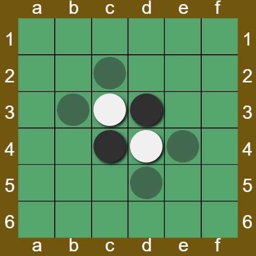
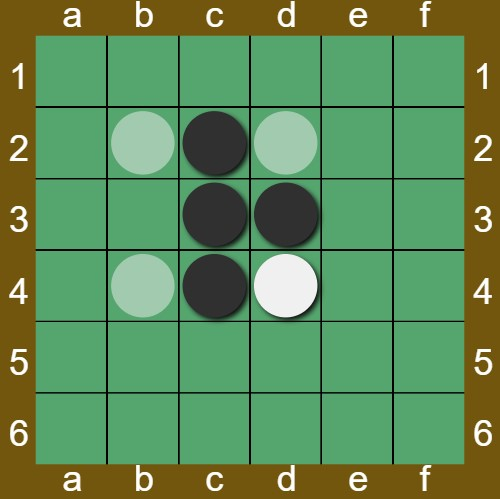

To start a game go to the homepage and select an offline game or if you want to and are logged in an online game. Choose a 4x4, 6x6, or 8x8 sized game board (the one above is 6x6) and if you want the white team to be played by an AI. If you play an offline game you can turn the AI off at anytime in the setting menu in the upper right when playing the game. There you can also change the game board color. The game will always start as the black player, the transparent pieces are the ones that the current player can place. When a pice is placed it will convert all of the opponents peices that are inbetween it and another of the players peices.
The goal of the game is to have the most pices when no more moves can be played by anyplayer.